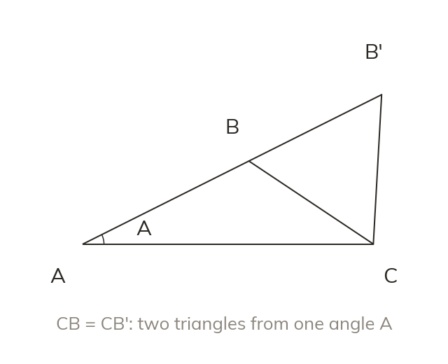

The included angle
Area = 12 ab sin C uses two sides and the angle between them. The angle must be the one those two sides make.
Right-angled trigonometry stops at the right angle. The area formula and the sine rule work in every triangle, from a plot of land to a ship's course.
Work down the page at your own pace. Write every answer in your book first, then click to check it.
Read each card, then follow the worked examples one step at a time.
Area = 12 ab sin C uses two sides and the angle between them. The angle must be the one those two sides make.
The height of the triangle is b sin C. So the area is 12 × a × b sin C.
Pick an answer. If it's wrong, the feedback tells you which mistake it was.
Section 7.1 The area of a triangle (p180-183): the questions finding an area from two sides and the included angle, and a side from a given area.
Read each card, then follow the worked examples one step at a time.
The sine rule pairs each side with the angle opposite it. So asin A = bsin B = csin C.

Two angles below 180° share each sine: B and 180° - B. The angle sum decides whether the second one fits.
Pick an answer. If it's wrong, the feedback tells you which mistake it was.
Section 7.2 The sine rule (p184-187): the questions finding missing sides and angles, including the two-answer case and the bearings problems.
Finished? Next lesson: 7.3-7.4 The Cosine Rule and Choosing a Method.
Log in, then search for a code to practise that skill.